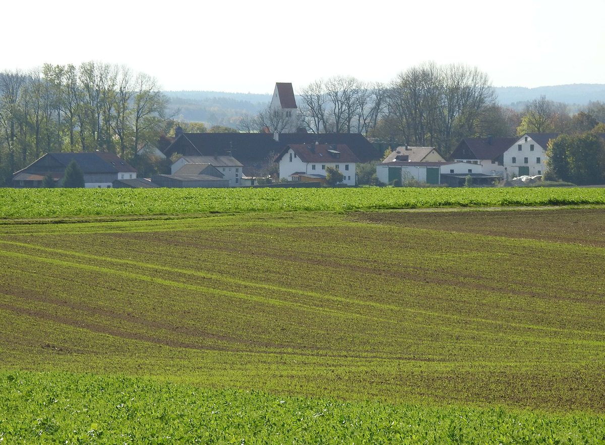

독일 바이에른 에겐호펜 주민, 뮌헨 시영 전력사가 짓는 7.2MW 풍력발전기에 협동조합 '고정 이자 대출'로 참여 길 열려

이웃 마을 시민에너지협동조합 '마이자허 란트', 5월 총회서 활동 지역 넓혀 에겐호펜 주민 우선 모집…첫 설명회에 40여 명, 발전기는 연말연초 가동 예정
독일 바이에른주 퓌르스텐펠트브루크군의 시민에너지협동조합 '뷔르거에너지 마이자허 란트(Bürgerenergie Maisacher Land)'가 이웃 지자체 에겐호펜(Egenhofen)의 람메르츠호펜 마을에 들어서는 풍력발전기에 에겐호펜 주민이 참여할 수 있도록 문을 열었다. 조합에 따르면 주민은 조합원으로 가입해 마이자흐·에겐호펜 두 지자체에서 벌이는 조합 사업 전체에 참여할 수 있고, 이와 별도로 이 발전기에 고정 이자 대출 형태로 돈을 넣을 수 있으며, 발전기 참여는 에겐호펜 주민에게 우선권을 준다. 발전기는 뮌헨 시영 전력사(Stadtwerke München)가 운영하며 이미 공사 중으로, 출력 7.2MW·전체 높이 261m에 계산상 약 5,200가구가 쓸 전기를 만들 수 있고 연말연초 무렵 가동할 예정이다. 조합은 2026년 5월 연례총회에서 큰 표 차로 활동 지역을 에겐호펜까지 넓히기로 의결했고, 아우프키르헨 성당 옛 곳간에서 연 첫 설명회에는 에겐호펜 주민 40여 명이 찾아왔다. 미하엘 샴베르거 조합 감사회 의장은 주민이 협동조합으로 뭉쳐야 대형 투자자와 시민 참여를 협상할 수 있는 힘이 생긴다며 "힘을 하나로 모아야 한다"고 말했고, 로베르트 쾰 에겐호펜 시장은 조합의 협력에 감사를 전했다. 대출 이자율과 기간, 모집 금액은 아직 알려지지 않았다.
시민에너지 관점
대형 공기업이 짓는 7.2MW 발전기에 주민 몫이 생긴 것은 마을 하나가 아니라 두 지자체 주민을 하나의 협동조합으로 묶어 협상 상대가 될 만큼 몸집을 키웠기 때문이다. 다만 고정 이자 대출은 발전기의 주인이 되는 것이 아니라 돈을 빌려주는 것이어서, 이자는 받더라도 운영과 수익 배분에 목소리를 내기는 어렵다는 한계가 있다. 그래도 위험이 적은 대출로 주민이 먼저 들어오고, 조합이 조합원과 자본을 쌓아 다음 사업에서 지분을 갖는 순서로 키워 갈 수 있다는 점에서 첫걸음의 뜻은 작지 않다. 국내에서도 대형 발전사의 풍력·태양광 사업에 주민 참여를 채권·펀드로만 묶어 두지 말고, 이웃 읍·면 주민이 함께 꾸린 협동조합이 지분을 놓고 협상할 수 있도록 제도를 고쳐야 한다.
출처: Kreisbote 2026-10-31 기자 미표기(협동조합 보도자료 바탕) 원문 보기
独バイエルン州エーゲンホーフェンの住民、ミュンヘン市営電力会社が建設中の7.2MW風車に協同組合の「固定金利ローン」で参加へ
隣町の市民エネルギー協同組合「マイザッハー・ラント」、5月の総会で活動地域を広げエーゲンホーフェン住民を優先募集…初の説明会に40人余り、風車は年末年始ごろ稼働予定
ドイツ・バイエルン州フュルステンフェルトブルック郡の市民エネルギー協同組合「ビュルガーエネルギー・マイザッハー・ラント（Bürgerenergie Maisacher Land）」が、隣接する自治体エーゲンホーフェン（Egenhofen）のラマーツホーフェン集落に建つ風力発電機に、エーゲンホーフェンの住民が参加できる道を開いた。組合によると、住民は組合員になればマイザッハとエーゲンホーフェンの二つの自治体で進める組合の事業全体に参加でき、これとは別にこの風車に固定金利のローンとして資金を出すこともでき、風車への参加はエーゲンホーフェン住民を優先する。風車はミュンヘン市営電力会社（Stadtwerke München）が運営し、すでに建設中で、出力7.2MW、全高261m、計算上約5,200世帯分の電力を賄え、年末年始ごろに稼働する予定だ。組合は2026年5月の年次総会で大差をもって活動地域をエーゲンホーフェンまで広げることを決め、アウフキルヒェンの教会の旧納屋で開いた初の説明会にはエーゲンホーフェンの住民40人余りが集まった。組合監査役会のミヒャエル・シャムベルガー議長は、住民が協同組合として結束してこそ大口投資家と市民参加を交渉できる力が生まれるとして「力を一つに束ねなければならない」と述べ、ローベルト・ケル・エーゲンホーフェン町長は組合の協力に謝意を示した。ローンの金利や期間、募集額はまだ明らかになっていない。
市民エネルギーの視点
大きな公営企業が建てる7.2MWの風車に住民の取り分が生まれたのは、一つの集落ではなく二つの自治体の住民を一つの協同組合にまとめ、交渉相手になれるだけの規模に育てたからだ。ただし固定金利ローンは風車の持ち主になることではなくお金を貸すことであり、利息は受け取れても運営や収益配分に声を届けにくいという限界がある。それでも、リスクの小さいローンでまず住民が加わり、組合が組合員と資本を積み上げて次の事業で持ち分を得るという順序で育てていける点で、最初の一歩としての意味は小さくない。韓国でも大手発電会社の風力・太陽光事業への住民参加を債券やファンドだけにとどめず、近隣の邑・面の住民が共につくった協同組合が持ち分をめぐって交渉できるよう制度を改めるべきだ。
出典: Kreisbote 2026-10-31 記者名なし（協同組合のプレスリリースに基づく） 原文を読む
德国巴伐利亚埃根霍芬居民可通过合作社"固定利率贷款"参与慕尼黑市政电力公司在建的7.2MW风机
邻镇公民能源合作社"迈萨赫地区"在5月大会上扩大活动范围，优先招募埃根霍芬居民…首场说明会40余人到场，风机预计年底年初投运
德国巴伐利亚州菲尔斯滕费尔德布鲁克县的公民能源合作社"迈萨赫地区公民能源"（Bürgerenergie Maisacher Land）向邻近市镇埃根霍芬（Egenhofen）的居民敞开大门，让他们可以参与在该镇拉默茨霍芬村兴建的一台风力发电机。据合作社介绍，居民加入合作社后可参与合作社在迈萨赫和埃根霍芬两个市镇开展的全部项目，此外还可以通过固定利率贷款的方式单独向这台风机投入资金，风机项目的参与优先面向埃根霍芬居民。这台风机由慕尼黑市政电力公司（Stadtwerke München）运营，目前已在施工，功率7.2MW、总高261米，按计算可满足约5,200户家庭用电，预计在年底年初前后投运。合作社在2026年5月的年度大会上以压倒性多数决定把活动范围扩大到埃根霍芬，在奥夫基兴教堂旧谷仓举行的首场说明会吸引了40余名埃根霍芬居民。合作社监事会主席米夏埃尔·沙姆贝格尔表示，居民只有通过合作社团结起来，才有力量与大型投资者谈判公民参与，"我们必须把力量拧成一股"；埃根霍芬镇长罗伯特·克尔对合作社的协作表示感谢。贷款利率、期限和募集金额尚未公布。
市民能源视角
大型公营企业兴建的7.2MW风机能为居民留出一份，是因为合作社不是只靠一个村子，而是把两个市镇的居民聚到同一个合作社里，规模大到足以成为谈判对手。不过，固定利率贷款并不是成为风机的主人，而是把钱借出去，即使拿到利息，也很难对运营和收益分配发声，这是它的局限。即便如此，居民先通过风险较小的贷款进入，合作社再积累社员和资本、在下一个项目中取得股份，这样一步步做大，作为第一步的意义并不小。韩国也不应把居民参与大型发电企业风电和光伏项目的方式只限于债券和基金，而应修改制度，让邻近邑、面居民共同组建的合作社能够就股份进行谈判。
来源: Kreisbote 2026-10-31 未署名（据合作社新闻稿） 查看原文
Residents of Egenhofen, Bavaria, can join Munich municipal utility's 7.2MW wind turbine through a co-op's fixed-interest loan
Neighbouring citizen energy cooperative Maisacher Land extended its area at its May general meeting and gives Egenhofen residents priority; more than 40 attended the first information evening, and the turbine is due online around the turn of the year
The citizen energy cooperative Bürgerenergie Maisacher Land in Bavaria's Fürstenfeldbruck district has opened a wind turbine being built in the village of Rammertshofen, in the neighbouring municipality of Egenhofen, to participation by Egenhofen residents. According to the cooperative, residents who become members can take part in all of its projects in the two municipalities of Maisach and Egenhofen, and can separately put money into this turbine through a fixed-interest loan, with Egenhofen residents given priority for the turbine. The turbine, already under construction and operated by the Munich municipal utility Stadtwerke München, has a capacity of 7.2MW and a total height of 261m, can supply the equivalent of about 5,200 households, and is due to start operating around the turn of the year. The cooperative's annual meeting voted by a large majority in May 2026 to extend its area to Egenhofen, and more than 40 Egenhofen residents came to the first information evening in the former parish barn in Aufkirchen. Michael Schamberger, chair of the cooperative's supervisory board, said residents must band together in a cooperative to gain the strength to negotiate citizen participation with large investors, urging them to "pool our strength", while Egenhofen mayor Robert Köll thanked the cooperative for its cooperation. The loan's interest rate, term and target amount have not yet been disclosed.
Citizen Energy View
Residents won a share in a 7.2MW turbine built by a large public company because the cooperative brought the people of two municipalities, not just one village, into a single body big enough to sit at the negotiating table. A fixed-interest loan, however, means lending money rather than owning the turbine, so lenders may earn interest but have little say over operations or how the returns are shared. Even so, it is a meaningful first step: residents can come in first through a low-risk loan, and the cooperative can build up members and capital so it can take an equity stake in the next project. Korea, too, should stop confining resident participation in large generators' wind and solar projects to bonds and funds, and change its rules so that cooperatives formed jointly by residents of neighbouring towns can negotiate for ownership stakes.
Source: Kreisbote 2026-10-31 No byline (based on a cooperative press release) Read the original